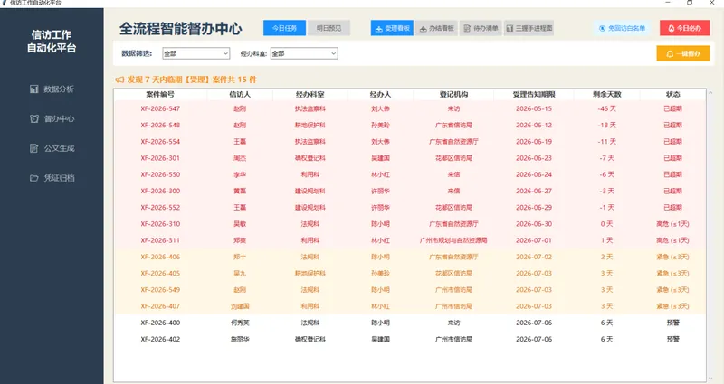
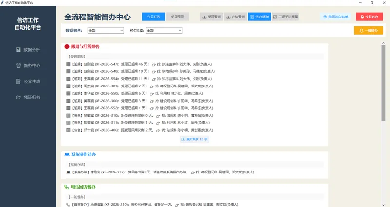
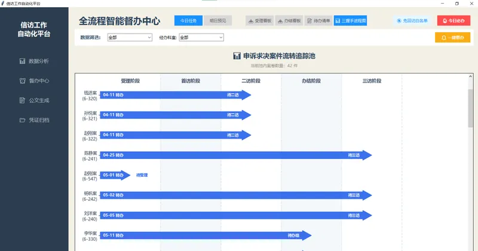
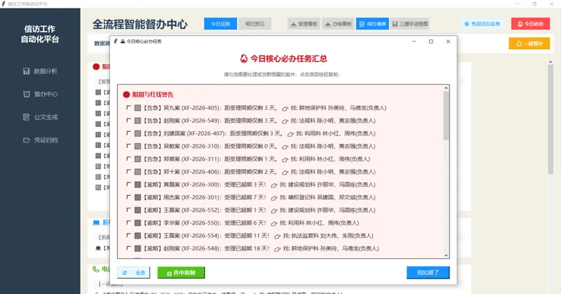
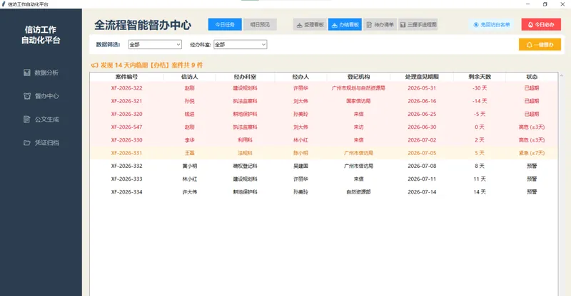

受理 + 办结双看板 — 分级预警
受理看板：扫描"受理告知书出具期限"字段，提前 7 天预警。剩余 ≤1 天标红（高危），≤3 天标橙（紧急）。办结看板：扫描"处理意见书出具期限"字段，提前 14 天预警。剩余 ≤3 天标红，≤7 天标橙。两个看板自动过滤已出具告知书、已办结、不受理/撤案等豁免案件。
智能待办清单 — 四类事由引擎
这是整个督办系统的核心引擎。一个无状态函数同时驱动"督办中心待办清单""今日必办弹窗""一键督办公文"三处调用。实时扫描全量数据，自动生成 4 类督办事由：
🔴 限期与红线警告——受理/办结超期及临期案件
💻 系统操作待办——告知书/复函寄出后需在信访系统点击受理或办结
📞 电话回访督办——一访/二访/三访各阶段提醒
📄 文书处理与归档——呈批到期 + 归档到期提醒
每条任务自动关联责任科室 + 经办人 + 科室负责人。


三握手进程图 — 作品集的视觉母题
专为申诉求决类案件设计的五阶段甘特图（受理 → 首访 → 二访 → 办结 → 三访）。每个案件用 Matplotlib 的 FancyArrow 绘制深蓝色同色系箭头，箭头长度和位置表示当前推进阶段。自动过滤不予受理、撤案、免回访和已归档案件。支持滑轨无缝滚动，鼠标滚轮仅在图表区域生效。
这个箭头元素也是本作品集的视觉母题——模块卡片右下角的圆形箭头按钮即提取自此。
今日必办 — 每日任务一键群发
从待办清单引擎中提取逾期和高优先级任务，按四类分组展示。每条任务可独立勾选，支持全选/单选。复制时自动清洗内部信息（去除经办人/负责人姓名、emoji 符号和分类方括号），输出纯净文本可直接粘贴到微信/政务群。点击"我知道了"一键关闭——为每日早会设计的极简交互。


一键督办公文 — 自动 @责任人
在看板或待办清单中点击"一键督办"，系统自动提取当前视图中所有临期案件的科室负责人 + 经办人，去重后拼接为 @人员名单，生成格式化督办消息。一键复制后直接发送到工作群，完成从"发现问题"到"通知到人"的完整闭环。